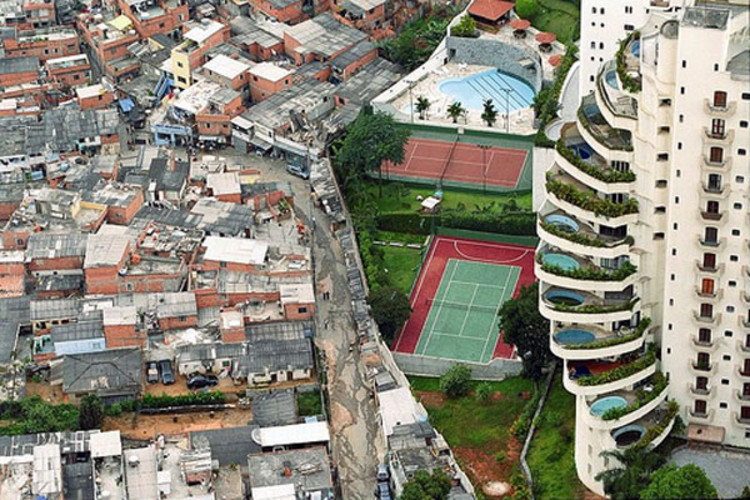

Desigualdade Urbana Global: Quem Ocupa o Espaço da Cidade?
Análise geográfica das disparidades territoriais, segregação e acesso a infraestruturas urbanas no Brasil e no mundo

As cidades, centros de atividades humanas e desenvolvimento, revelam também profundas desigualdades na forma como seu espaço é ocupado e utilizado. Do ponto de vista da geografia urbana, a questão de "quem tem direito à cidade" se traduz na disparidade de acesso a recursos, infraestruturas e oportunidades, moldando paisagens que refletem a exclusão em diversas escalas, do local ao global.
O Direito à Cidade: Acesso e Produção do Espaço
O conceito de Direito à Cidade, em uma abordagem geográfica, foca no acesso equitativo ao espaço e na capacidade dos indivíduos e comunidades de participar ativamente na produção e transformação desse espaço. Isso envolve a garantia de moradia em áreas seguras, o acesso a redes de saneamento, energia, e a equipamentos públicos como escolas, hospitais e áreas de lazer. Geographicamente, trata-se de garantir que a localização no espaço urbano não seja um fator de exclusão, mas sim de inclusão, permitindo que todos usufruam e contribuam para o desenvolvimento da cidade. A ausência desse direito é visível na distribuição desigual de serviços e infraestruturas pelo território.
Segregação Socioespacial: As Fronteiras Invisíveis da Cidade
A segregação socioespacial é um fenômeno geográfico marcante que se manifesta na concentração de grupos com diferentes condições socioeconômicas em áreas distintas da cidade. Isso cria paisagens urbanas fragmentadas: de um lado, bairros planejados, com alta qualidade ambiental e oferta abundante de serviços; do outro, periferias e áreas subnormais, com infraestrutura precária e carência de equipamentos. No Brasil, metrópoles como São Paulo e Rio de Janeiro exemplificam essa polarização, com favelas e conjuntos habitacionais precários margeando condomínios fechados. Globalmente, cidades como Mumbai (Índia) e Joanesburgo (África do Sul) também exibem essas cicatrizes urbanas, onde a renda e o poder desenham os limites de acesso à cidade. Essa divisão geográfica aprofunda as disparidades sociais, restringindo o acesso a oportunidades e reforçando ciclos de pobreza.
Favelização e Ocupações Irregulares: A Expansão do Espaço Precário
A favelização e as ocupações irregulares são, geograficamente, formas de produção do espaço urbano por parte de populações sem acesso ao mercado formal de terras e moradias. Esses assentamentos, muitas vezes localizados em encostas, várzeas ou outras áreas de risco ambiental, crescem de forma orgânica, sem planejamento prévio ou infraestrutura básica. No Brasil, as favelas são uma realidade consolidada em quase todas as grandes e médias cidades. Globalmente, esses fenômenos são replicados em "slums" na Ásia (como em Daca, Bangladesh) e "barrios" na América Latina (como em Caracas, Venezuela), refletindo a incapacidade dos mercados e das políticas públicas em prover moradia para todos. Do ponto de vista geográfico, estas áreas representam desafios complexos de gestão de risco, saneamento e integração à malha urbana formal.
Mobilidade e Acessibilidade Urbana: O Desafio da Conexão Espacial
A mobilidade e a acessibilidade urbana são essenciais para que os cidadãos possam se deslocar pela cidade e acessar seus diferentes recursos. Contudo, a geografia do transporte público frequentemente reforça a desigualdade. Em muitas cidades, as redes de ônibus e trens são mais eficientes nas áreas centrais e mais ricas, enquanto as periferias contam com poucas linhas, viagens demoradas e custos elevados. Essa distância geográfica entre moradia e trabalho, ou entre moradia e serviços essenciais, consome tempo e recursos das populações de baixa renda, limitando suas oportunidades. A falta de calçadas adequadas, a inacessibilidade para pessoas com deficiência e a escassez de ciclovias em certas regiões também criam barreiras físicas que, geograficamente, isolam e limitam a autonomia de deslocamento de muitos.
Estudo de Caso Geográfico: A Dinâmica da Desigualdade em Cenários Urbanos
Em diversos municípios, a análise geográfica da desigualdade urbana revela a importância de se observar a distribuição espacial de recursos e serviços. A presença de loteamentos fechados, a expansão de áreas mais valorizadas e a localização de empregos e serviços concentrados podem criar dinâmicas de acessibilidade e distribuição desiguais, mesmo em locais com índices de desenvolvimento elevados. A compreensão geográfica desses fenômenos, tanto em nível local quanto global, é crucial para o planejamento urbano e a implementação de políticas que visem promover um espaço urbano mais equitativo, onde o direito à cidade se torne uma realidade para todos os habitantes, independentemente de sua localização ou renda. É um esforço contínuo para que a cidade, de fato, pertença a todos.
A matéria analisa a desigualdade urbana sob uma perspectiva geográfica, focando como o espaço é desigualmente ocupado. Aborda o direito à cidade, a segregação socioespacial (favelização e ocupações irregulares) e os desafios de mobilidade e acessibilidade em escala global e brasileira, destacando a necessidade de cidades mais justas e inclusivas para todos os seus habitantes.
Por Jornal Mundial | 03 de junho de 2025